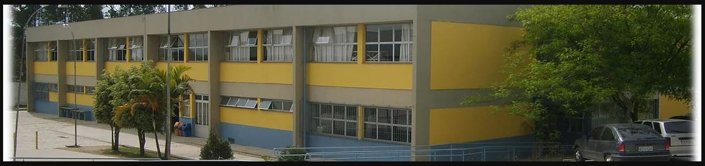
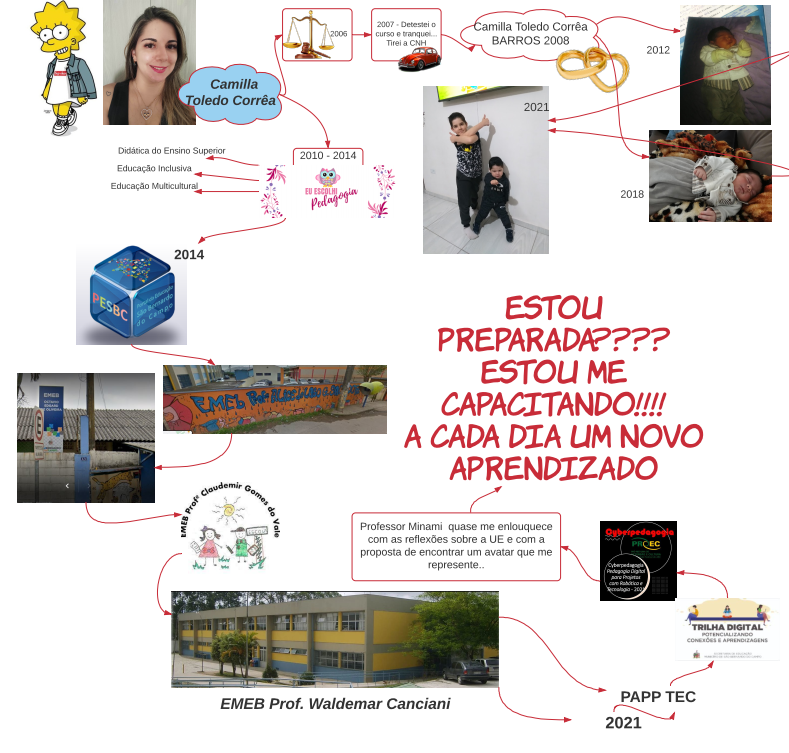

Ingressei na unidade escolar, como PAPP TEC, em fevereiro de 2021, dentro de um contexto totalmente atípico e imprevisível...
Também assumi o cargo de PAPP/TEC no mês de fevereiro, o que torna minha experiência com a escola mais nova ainda.

Muitas descobertas e muitos desafios... Mas estou simplesmente apaixonada por tudo isso!
Um desses desafios é o curso da UFABC... Não está sendo fácil conciliar: home office, crianças pequenas, um novo cargo. Mas está valendo muito!!!
A cada aula uma nova "caixinha" é aberta em minha cabeça, trazendo à tona milhares de ideias e vontades.
Professor Minami pediu um relato sobre quem sou eu... Então me pego a refletir, e a desenhar... Adoro desenhar, me expressar por tópicos, desenhos e setinhas... sim, essa sou eu!😊
Espontânea, bagunçada, mãe, esposa, professora, estudante, PAPP (um objetivo de anos alcançado), e agora, Lisa!! 🤩

Eu nunca havia parado para pensar sobre uma personagem que me representasse. Confesso que fui fazer "testes de Facebook" sobre "qual personagem você é?" 🤣🤣🤣
E não é que deu certo! Parei para analisar (porque virginiana é assim, analisa tudo 🙄), e tenho muitosssss pontos em comum com a Lisa Simpson.
Vou carregar essa representação para sempre agora! Adorei a brincadeira. E quando me perguntarem o porquê, vou falar que foi um tal de professor Pikachu que me fez encontrá-la.
Como já citei, a cada aula uma nova "caixinha" se abre, inundando minha cabeça de ideias.
E assim vou conquistando, aprendendo:
"As pilhas me deram um baile! Tive dificuldade em fixá-las juntas, porque estava sem o suporte. Depois, o led não acendia... Demorou para eu perceber que o resistor estava errado. A marcação da embalagem estava incorreta. Precisei conferir pelas listras (que dificuldade diferenciar as cores!😥). Mas no fim, consegui! e agora meu filho também é especialista em ligar leds...😂😂"
"E como já citei... Home office é assim! 'Se vira nos 30': gravação com choro de criança no fundo!!"
Conheça um pouco sobre a EMEB Waldemar Canciani: